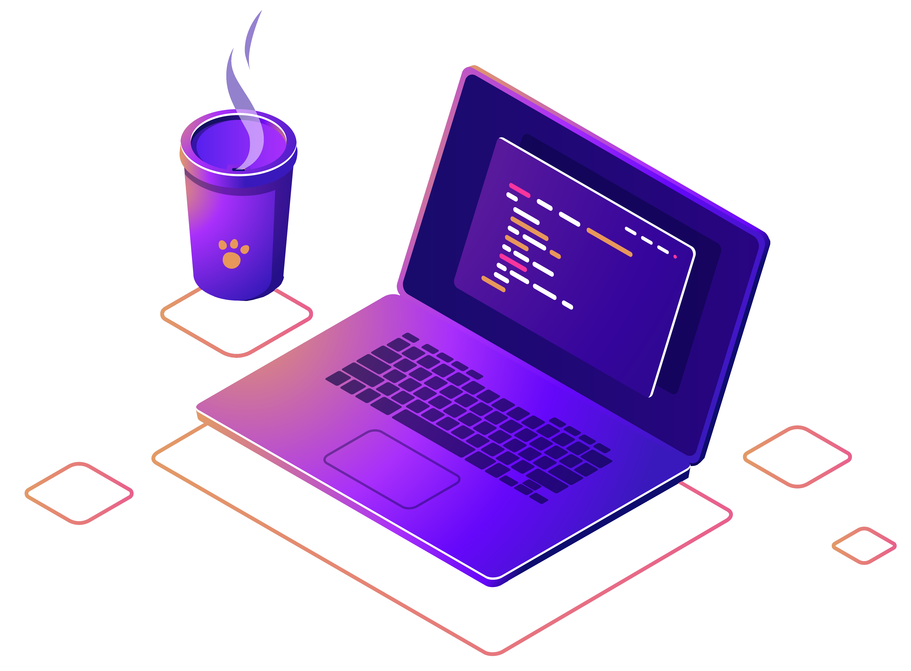

Publicar
Loop()Social
Dashboard
Sair
x
Descrição (máximo de 300 caracteres)
Tag (máximo um tag)
Enviar
Bem-vindo à dashboard
Verifique informações sobre a Loop()Social

Últimas 24 horas - engajamento
Total de dúvidas
Total de publicações
Dúvidas por publicações
Todos os tempos
Todos os tempos